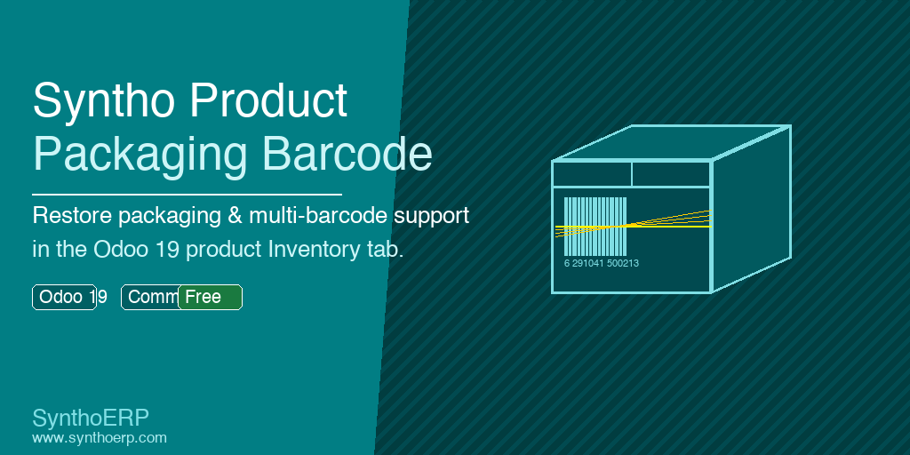

Restore the Packaging / Barcodes block in the Odoo 19 product Inventory tab for single-variant products so barcode packaging lines are editable again from the product form.

A focused view enhancement for teams that manage packaging barcodes on the product form.
Brings back the Packaging / Barcodes group inside the product Inventory page.
Barcode packaging lines can be edited directly from the product form with an inline list.
Uses the current packaging relation on the underlying single product variant.
The section is shown only when the product template has exactly one variant.
The embedded list lets users maintain the packaging barcode and unit of measure for each packaging line.
Copy syntho_product_packaging_barcode into your addons path.
Restart Odoo and update the Apps list.
Install Syntho Product Packaging Barcode.
Open a single-variant product and manage packaging barcodes from the Inventory tab.
| Dependency | stock |
| View Target | Product template Inventory tab |
| Related Field | product_variant_id.product_uom_ids |
| Visible When | The product template has exactly one variant |
| Support Contact | info@synthoerp.com |